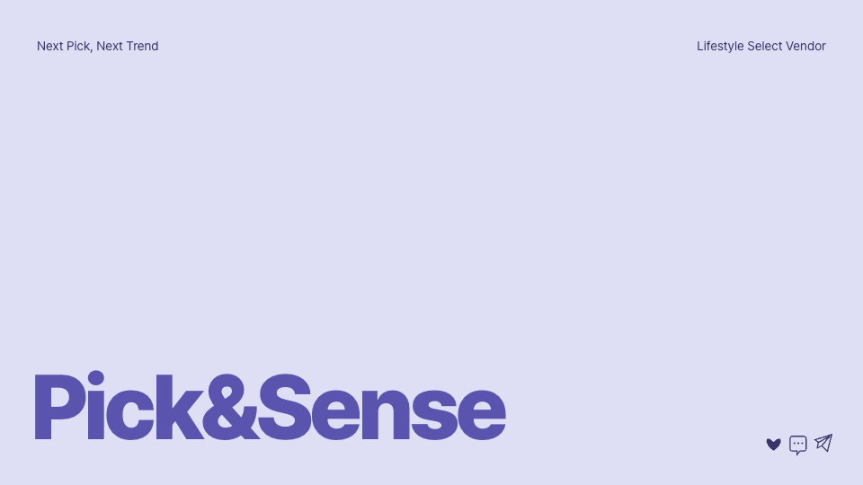
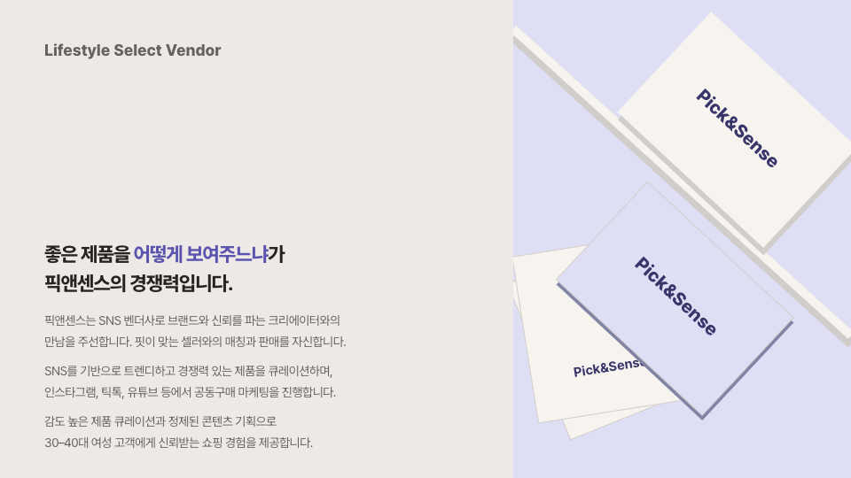
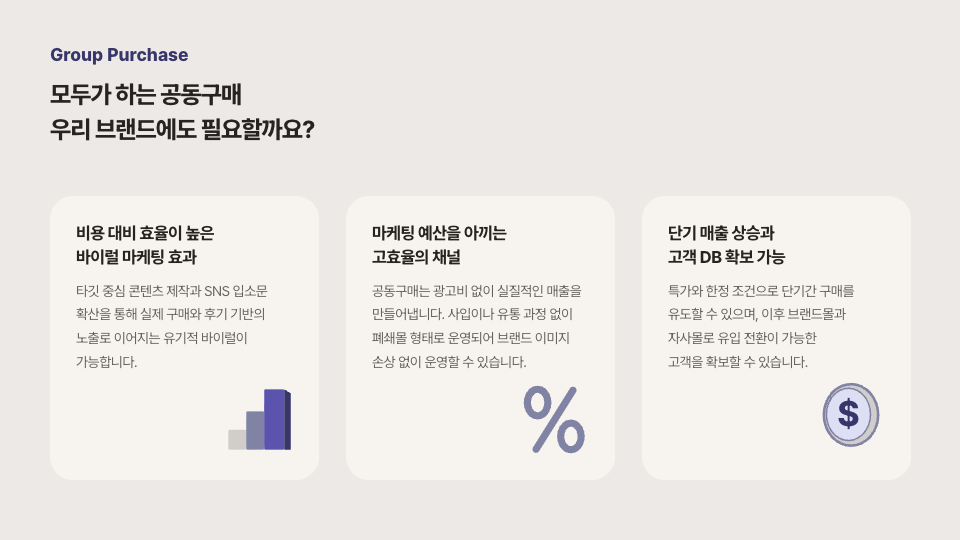
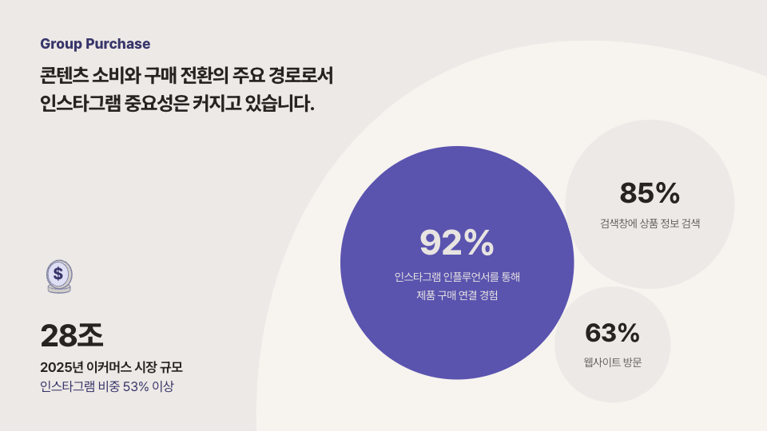
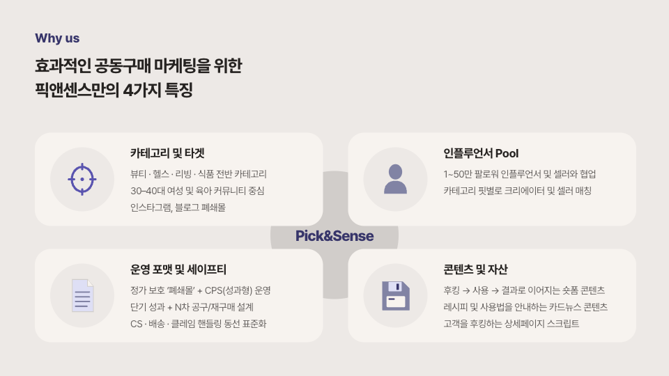
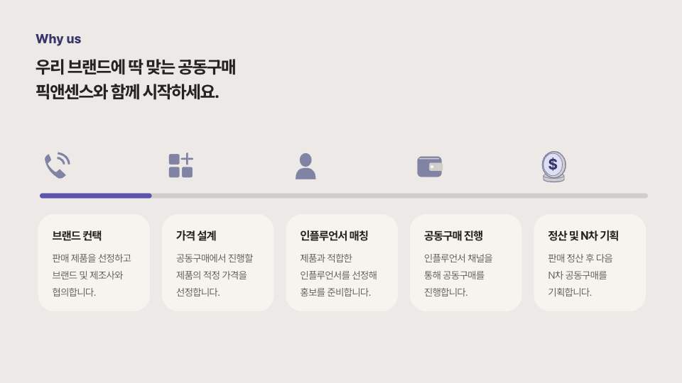

Pick&Sense · 표지
넓은 단색 배경, 상단 양끝 영문 문구, 하단 좌측 대형 워드마크와 우측 소셜 아이콘 · 넓은 단색 배경, 상단 양끝 영문 문구, 하단 좌측 대형 워드마크와 우측 소셜 아이콘

좋은 제품을 어떻게 보여주느냐
좌측 60%의 넓은 여백과 하단 소개 문구, 우측 40%의 대각선 명함 콜라주 · 좌측 60%의 넓은 여백과 하단 소개 문구, 우측 40%의 대각선 명함 콜라주

우리 브랜드에도 공동구매가 필요할까요?
상단 좌측 질문 아래 동일한 크기의 세로형 카드 3개, 카드별 제목·설명·우하단 아이콘 · 상단 좌측 질문 아래 동일한 크기의 세로형 카드 3개, 카드별 제목·설명·우하단 아이콘

인스타그램을 통한 구매 전환
좌측 시장 규모 숫자와 우측 크기가 다른 3개 버블 차트, 큰 흰 원호를 활용한 비대칭 정보 배치 · 좌측 시장 규모 숫자와 우측 크기가 다른 3개 버블 차트, 큰 흰 원호를 활용한 비대칭 정보 배치

픽앤센스만의 4가지 특징
4개의 가로형 카드를 2×2로 배치, 각 카드의 원형 아이콘과 설명, 중앙에 겹쳐진 브랜드 원 · 4개의 가로형 카드를 2×2로 배치, 각 카드의 원형 아이콘과 설명, 중앙에 겹쳐진 브랜드 원

픽앤센스와 함께 시작하세요
상단 좌측 제목, 중단 5개 아이콘과 가로 진행선, 하단 5개 단계 설명 카드 · 상단 좌측 제목, 중단 5개 아이콘과 가로 진행선, 하단 5개 단계 설명 카드